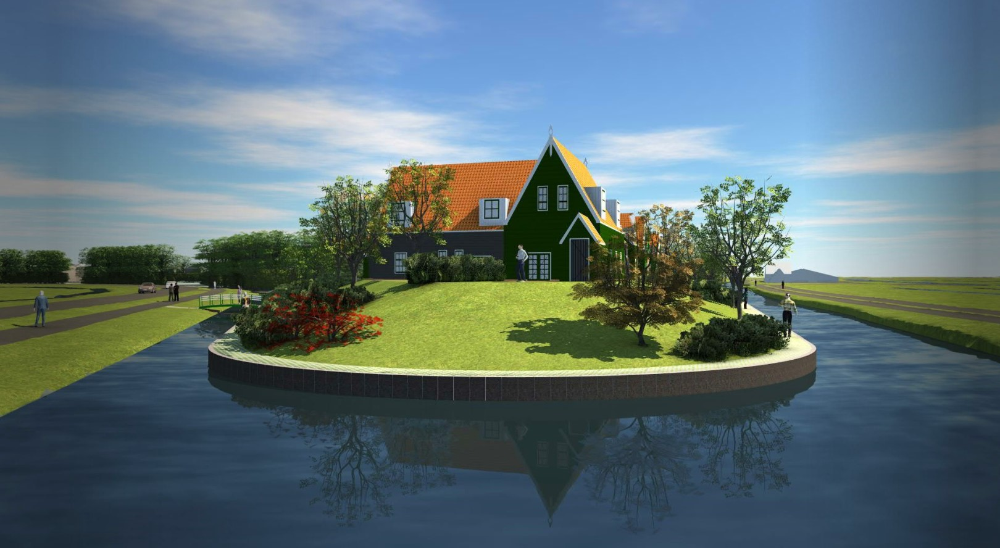

Het idyllische Marken breidt uit met twee moderne werven
Nieuwe werven nabij Sportvereniging Marken
Om de leefbaarheid en doorstroming op Marken te verbeteren worden twee nieuwe werven ontwikkeld nabij Sportvereniging Marken. Het huidige parkeerterrein en de twee oostelijke velden komen daarvoor in aanmerking. Bij de ontwikkeling van deze nieuwe werven is het van belang dat zij aansluiting vinden bij de ruimtelijke principes zoals deze cultuurhistorisch gevormd zijn, dat zij kunnen voorzien in hedendaagse gemakken van toekomstige bewoners en dat voldaan wordt aan de gestelde eisen van het robuust bouwen op Marken.
Samen met het aanwezige groen fungeert de entree als buffer tussen het sportpark en de woningen. Het planconcept van beide locaties gaat uit van een helder afgebakende werf met een daarbij behorende eigen parkeerplaats op het maaiveld.
Een nieuw woongebied met respect voor het verleden
De traditionele werfopbouw en de kenmerkende houtskeletbouwwoningen zijn belangrijke uitgangspunten bij de ontwikkeling van het plan. Bij de inpasbaarheid van het programma is goed gekeken naar de bestaande kwaliteiten van de locatie en naar de eisen van het ‘modern comfort’. Cultuurhistorie is een belangrijk begrip op Marken, daarmee respecteren we de wensen van de bestaande bewoners. Met een woongebied dat aansluit bij de ‘Markse tradities’ zullen ook toekomstige bewoners zich er snel thuis voelen.
Op de plek van de sportvelden en het bijhorende parkeerterrein komen circa 100 woningen. Het plan is opgebouwd uit verschillende woningtypologieën. Starterswoningen, rijwoningen, appartementen en vrijstaande woningen worden afgewisseld met sociale huur- en sociale koopwoningen. Op deze manier worden woonkansen voor alle doelgroepen en leeftijden gecreëerd.
Op de werven wordt een gevarieerd woningbouwprogramma gerealiseerd
De westelijke werf heeft een driehoekvormige lay-out waarvan de zuidelijke en westelijke zijde volledig aan het open landschap liggen. Vanaf deze werf is een directe zichtrelatie met de Kerkbuurt en de scherpe punt in het zuiden biedt de kans om met imposante Markse bebouwing de entree van het gebied te markeren. De oostelijke werf is gelegen langs de dijk. In noordelijke richting is oneindig zicht over het Markermeer en in oostelijke richting zal er vanuit de diverse woonkamers zicht op de vuurtoren zijn.
Een mix van vrijstaande- en geschakelde woningen wisselen elkaar af. De woningen worden vanuit het binnengebied ontsloten en hebben tuinen rondom. Subtiele verspringingen in bouwblokken geven het binnengebied een speelse en intieme sfeer mee. Via steegjes en zijstraatjes hebben individuele woningen vanuit het binnengebied zicht op het achterliggende landschap. Op de werf is ruimte om met de auto bij een deel van de eigen woningen te komen. Incidenteel parkeren geeft het binnengebied eveneens een informeel karakter.